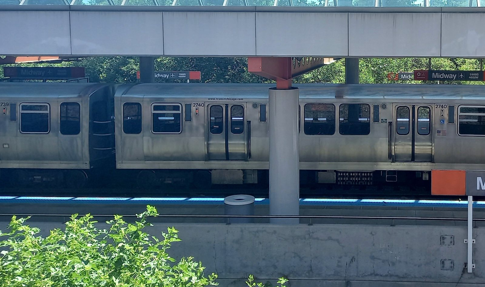
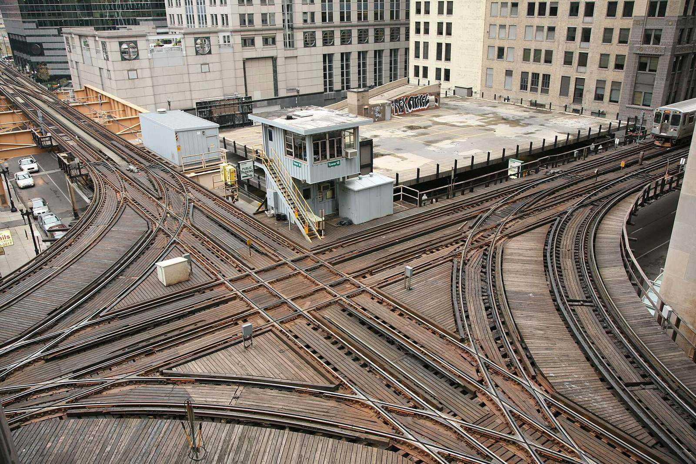

The train stopped on the bridge. Below, the river was green and slow.
“We are waiting for signals,” the voice said.
We waited. Three minutes. Four. Five. Nobody said anything. An Orange Line train came across in front of us and turned and was gone.
Then we moved.
It did not have to be like that. It never did.
Brown Line, southbound, the Wells Street bridge.
The plan
Run Brown and Orange as one line.
Kimball ↔ Merchandise Mart ↔ Wells ↔ Van Buren ↔ Roosevelt ↔ Midway
Trains run both ways, north and south, between Kimball and Midway. Today, Brown and Orange each go all the way around the Loop elevated, in opposite directions. Under this plan they stop circling and run straight through on the west and south sides of the Loop: down Wells, along Van Buren, and on to Roosevelt.
No new track. No construction. Just a new way to run the trains CTA already has.


What riders get
Free. More trains.
- FreeCTA can do it with the track it already has. No construction, no new tracks, no new trains.
- More trainsBrown and Orange trains stop spending time circling the Loop, so the same trains run more often. Both lines get more frequent service.
Fewer conflicts at Tower 18
At Lake and Wells, Brown and Orange trains cross the paths of other trains as they circle the Loop. Running them straight through removes a conflicting move at Tower 18: fewer trains held, less waiting for signals.
More room in the Loop
Two lines stop going all the way around the Loop elevated. That frees up space on the busiest track in the system.
One seat across the city
Ravenswood, Lincoln Square and Lakeview get a straight ride through the west and south sides of the Loop to the Southwest Side and Midway Airport. No transfer.
Easy transfers for the east Loop
Heading to Lake or Wabash? Change at Merchandise Mart or Roosevelt.

Why it matters
One junction. Hundreds of trains a day.

Tower 18, at Lake and Wells, is “the busiest section of track in the entire CTA system,” with about 700 trains on an average weekday (CTA, Oct 2025). When trains cross each other’s paths there, one of them must wait. Riders have heard it: “We are waiting for signals.”
Fewer crossings means less waiting. Running Brown and Orange straight through removes a conflicting move at Tower 18 for good.


FAQ
Questions and answers
Does this cost anything?
No. It uses the track CTA already has. There’s nothing to build.
Will my trains come more often?
Yes. Brown and Orange trains stop circling the Loop, so the same trains run more often on both lines.
How do I get to the east side of the Loop?
Change at Merchandise Mart or Roosevelt for trains along Lake and Wabash.
What about the Loop elevated?
It stays busy. Green keeps its route on Lake and Wabash, and the Loop keeps its other trains. Brown and Orange use the west and south sides, down Wells and along Van Buren.
Is this an official CTA plan?
No. Waiting for Signals is an independent rider campaign. The map on this site is unofficial.
The ask
CTA: run it.
Get involved.
Ride Brown, Orange or any line through the Loop? Add your name and show CTA that riders want it.
Sign upQuestions or ideas? Email hello@waitingforsignals.org or follow @WaitForSignals on X.